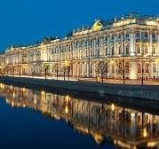

ГОСУДАРСТВЕННЫЙ ЭРМИТАЖ

В самом сердце Санкт-Петербурга, на берегу Невы, находится один из известнейших музеев мира Эрмитаж.
Поток желающих посетить его, чтобы полюбоваться произведениями искусства, собранными здесь, не
ослабевает ни летом, ни зимой.
Эрмитаж Санкт-Петербурга
Государственный музей-заповедник «Царское Село»
Екатерининский дворец

Экспозиция Екатерининского (до 1910 года — Большого Царскосельского) дворца-музея охватывает более
чем 300-летнюю историю выдающегося памятника и знакомит с творчеством архитекторов, которые участвовали
в его строительстве и отделке в XVIII–XIX веках.
Екатерининский дворец